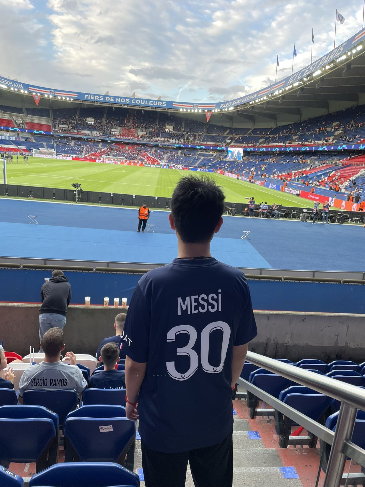
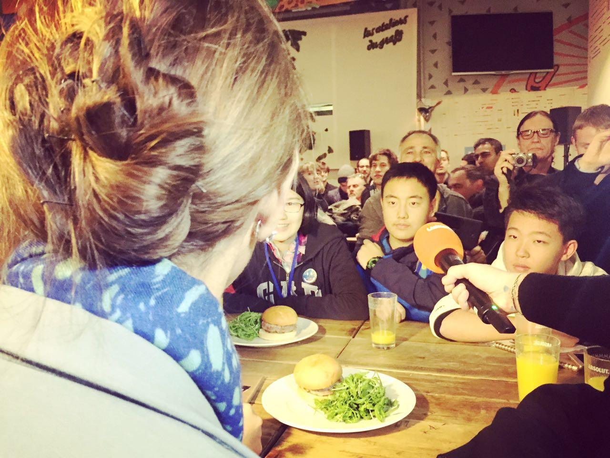

Literature
I loves literature. I began to be interested in literature when I was very young, especially Chinese classical literature. My favorite writer is Kafka, because his works are very imaginative. I also love writing. this is the short novel I published before "short novel from Yulai" The name of it is The fox in the public square.

Football
I'm also a big fan of football. This is my favouite team, FC Barcelona's website. I start to watch them since I was 15 years old. My favourite football player is Messi.
✈TRAVEL✈
I like to travel to different countries and places. I prefer natural scenery to cultural history because beautiful scenery makes people happy. It can let me put down the pressure and ease my troubles.
Compared with the mountains, I prefer the sea, because the sea is generally more vast and extensive. I was most impressed by the sea of China, Bali, Greece and the United States.
I have been to about 20 countries, including Japan, South Korea, Singapore, Thailand, Malaysia, Indonesia, Canada, the United States, the Bahamas, Russia, Greece, Croatia, France, Germany, Italy, Sweden and Morocco. Only Oceania and South America have never been there. I am very proud.

Croatia,zadar

Thailand, Phiphi island.jpeg
Singing
I am a very enthusiastic and energetic person, and I like to show my strengths in front of people. I like singing. I like to listen to the old songs of the 1980s in China, and my favorite singer is George Lam.
In addition, I like rock and roll. Queen, ACDC, Zeppelin airship are all my favorite rock bands. I like to listen to songs created in previous times, and think they are more tolerant.
I believe musics have contributed a lot to my personal growth and character. They've increased my self-esteem, improved my social skills and leadership abilities. I like singing, and I can gain confidence in this process.
Activity
I keep caring about the environment and have participated in many environment related activities, including COP21 and COP22. I once participated as a member of the delegation of middle school students in Shenyang, China.
I think protect the world and environment is really important. It is really needful for get more attention from the others. 